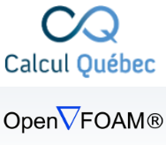
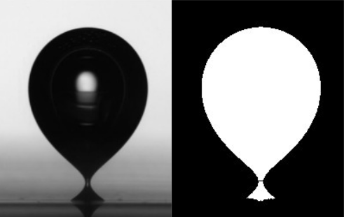

Shell scripts to make the transfers of OpenFOAM cases easier and more automatically
Creating automatic generated cases and send the generated cases to Calcul Quebec server with CaseFOAM(Python module)

Shell scripts to make the transfers of OpenFOAM cases easier and more automatically
Creating automatic generated cases and send the generated cases to Calcul Quebec server with CaseFOAM(Python module)

Image processing code written with Java using ImageJ to count the number of bubbles or droplets and extract time-dependent data
The image taken from the article below: Mirsandi, H., Smit, W. J., Kong, G., Baltussen, M. W., Peters, E. A. J. F., & Kuipers, J. A. M. (2020). Influence of wetting conditions on bubble formation from a submerged orifice. Experiments in Fluids, 61(3), 1–18. https://doi.org/10.1007/s00348-020-2919-7
PhD Student in Mechanical Engineering
The University of Sherbrooke
Teaching asistant
Izmir Institute of Technology
Switching to a Linux OS(Ubuntu) from a Windows OS.
Mechanical engineer
Modeling 3D centrifugal separators and preparing technical drawings
Hakkiustaogullari Mak. San., Aydin, TURKEY
Bachelor degree in Mechanical Engineering
Celal Bayar University, Manisa, TURKEY